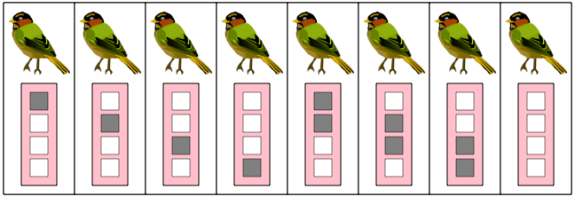
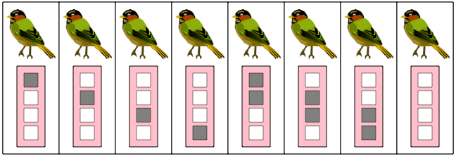

Lintujen rengastus
Luo kullekin linnulle keskenään erilainen rengastusmerkki klikkailemalla lintujen alla olevia valkeita ruutuja.
Päästä linnut sen jälkeen vapaiksi.
Linnut asettuvat alariville satunnaiseen järjestykseen, ja sinun pitää palauttaa linnut takaisin yläriville niiden alkuperäiseen järjestykseen.

 
